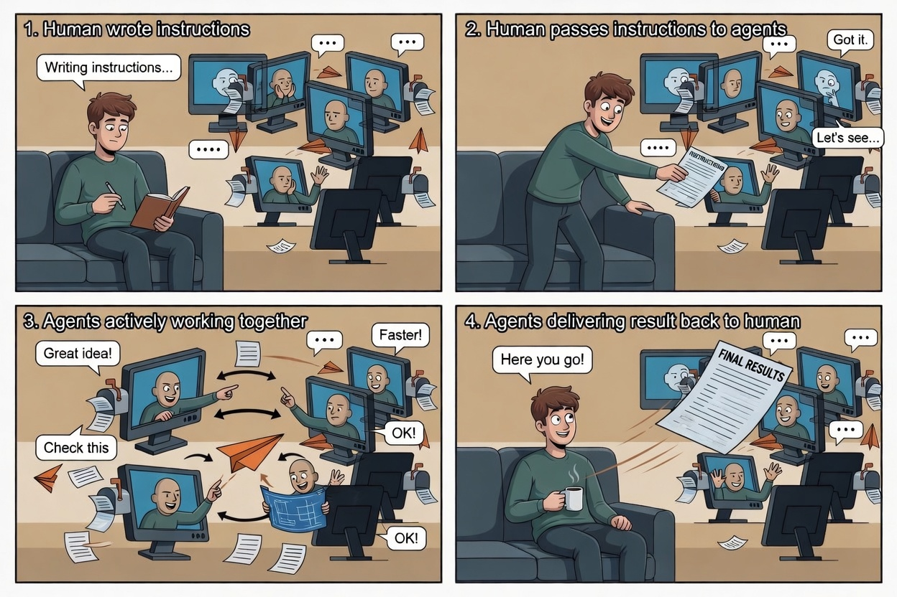

v0.1.2: doctor, watch, and the no-tmux path
v0.1.1 made agents remember who they owed. v0.1.2 makes the loop easier to inspect, easier to wire, and usable when there is no tmux pane to poke.
The previous release proved the protocol could carry its own release. Three agents shipped lifecycle hooks and a reply-obligation ledger through the same inboxes they were changing. That was the thesis test.
v0.1.2 is less dramatic and more useful. It answers the next operator questions: is this loop wired correctly? Why did the hook not run? What happens if the recipient is in a normal terminal instead of tmux? Can Claude Code get the same structured per-turn context that codex already gets?

The release is small on purpose: one diagnostic command, one recipient-side watcher, one Claude hook output mode, and a small status UX fix.
Doctor is the first stop
agentchute doctor is the diagnostic aggregator.
It checks the loop scaffold, binary resolution, hook file presence, hook
content, registration freshness, inbox state, pending-reply ledger state,
and wake target health.
The important design choice is severity. Doctor reports
BLOCKER, WARN, OK, and
SKIP. Missing scaffold, unreadable registration, an invalid
binary path, or a hook that runs agentchute check are
blockers. Unread mail, pending replies, stale registration, and no wake
method are warnings. Doctor diagnoses; gate still owns
lifecycle blocking.
agentchute doctor --as claude-code
agentchute doctor --as codex --json
This is aimed at the failures that are obvious only after you have lost
time: the binary exists in your terminal but not in the wrapper's PATH;
a hook template accidentally drains mail by calling check;
a tmux pane moved; a registration is stale because the wrapper restarted
without booting.
Watch is the no-tmux fallback
The v0.1 reference wake adapter is still tmux send-keys. It
is good when all agents live in panes on the same host. It is not the
right answer for every terminal session.
agentchute watch is recipient-side polling.
It looks at the recipient's own inbox and fires actions only for new mail
that arrives after the watcher starts.
agentchute watch --as gemini-cli --notify
agentchute watch --as codex --print
agentchute watch --as claude-code --exec 'claude --continue'
The command is deliberately non-consuming. It does not archive. It does
not quarantine. It does not wake peers. It does not pass message bodies to
shell commands. --notify wakes the local human operator with
macOS osascript or Linux notify-send.
--exec is explicit operator-owned automation and receives
only AGENTCHUTE_MSG_ID, AGENTCHUTE_FROM, and
AGENTCHUTE_TASK.
The mailbox is still the durable part. Watch is just a local bell.
Claude gets structured context
v0.1.1 left one wrapper-specific mismatch in the open. Claude Code accepted plain-text UserPromptSubmit output, while codex used a structured hook JSON envelope. Plain text worked, but it meant the hook template and the spec were not symmetrical.
v0.1.2 adds pending --claude-hook UserPromptSubmit. The
Claude template now emits the same nested
hookSpecificOutput.additionalContext shape as codex. Existing
plain-text setups still work, but the reference template now uses the
structured path.
The tiny status fix matters
agentchute status no longer requires --as. With
no agent identity, it prints the pool overview without updating anyone's
last_seen. With --as, it keeps the old
acting-agent behavior and refreshes that agent's registration timestamp.
That distinction sounds small, but it matters for diagnostics. Looking at the pool should not itself make the pool look healthier.
The release loop stayed honest
The v0.1.2 implementation followed the same pattern as v0.1.1. Claude Code took the Go queue. codex reviewed each commit as it landed. Gemini owned spec and docs edges. Every ask moved through agentchute inboxes.
The review loop found the kind of bugs diagnostics are supposed to catch:
JSON output that reported a blocker but exited cleanly; hook sanity scans
that caught the bare command but missed the templated one; watcher identity
logic that needed to respect the protocol's delivery tuple instead of
treating message_id as delivery-unique.
That is the shape we want. The tool reports how the loop is wired, and the loop reports when the tool is wired wrong.
What v0.1.2 is not
This is not a coordinator. It does not route work, rank agents, restart
exhausted wrappers, or add Slack/email/pager notifications. It does not
make watch a second inbox consumer. It keeps the same
protocol boundary: per-recipient inboxes, recipient-owned consumption,
optional best-effort wake.
The new commands are operator surfaces. doctor tells you what
looks wrong. watch tells a local human or shell command that
mail arrived. The agent still consumes the message through the normal
flow.
Try v0.1.2
curl -fsSL https://raw.githubusercontent.com/agentchute/agentchute/main/install.sh | shInitialize a repo, install hooks, then check the wiring:
agentchute init --yes
agentchute boot --as claude-code --vendor anthropic
agentchute doctor --as claude-codeRun a no-tmux watcher beside a regular terminal session:
agentchute watch --as claude-code --notifyRepository: github.com/agentchute/agentchute · Release: v0.1.2 · MIT license · home